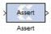

|
|
The Xilinx Assert block is used to assert a rate and/or a type on a signal. This block has no cost in hardware and can be used to resolve rates and/or types in situations where designer intervention is required.
Common Options in Block Parameter Dialog Boxes.The Output type parameter in this block uses the same description as the Arithmetic Type described in the topic Common Options in Block Parameter Dialog Boxes.The Assert block does not use a Xilinx LogiCORE™ and does not use resources when implemented in hardware.In cases where the simulation engine cannot resolve rates or types, the Assert block can be used to force a particular type or rate. In general this may be necessary when using components that use feedback and act as a signal source. For example, the circuit below requires an Assert block to force the rate and type of an SRL16. In this case, you can use an Assert block to 'seed' the rate which is then propagated back to the SRL16 input through the SRL16 and back to the Assert block. The design below fails with the following message when the Assert block is not used.“The data types could not be established for the feedback paths through this block. You may need to add Assert blocks to instruct the system how to resolve types.